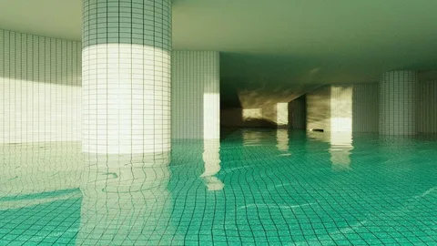
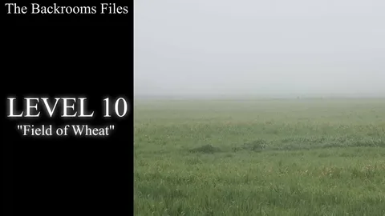
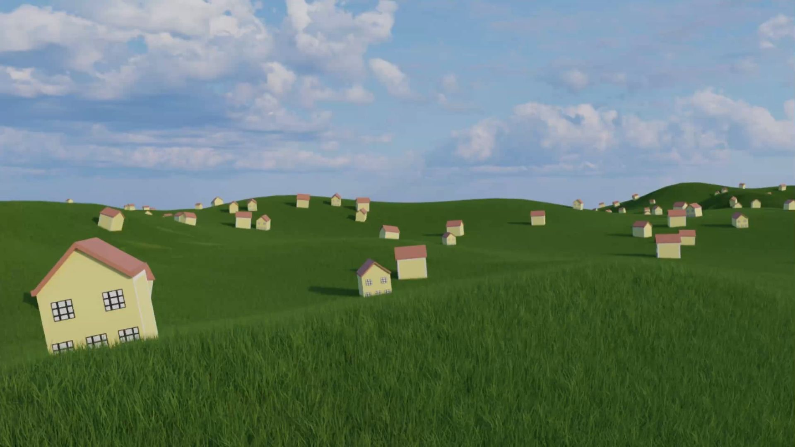

Sub-Level 37: Hydro-Spatial Architecture
Vast, interconnected aquatic structures with ambient light, non-Euclidean tiling, and static atmospheric pressure.

One page, two tasks: text that changes size and cards that change layout, using only CSS media queries.
Resize the browser window to see the text change. Font sizes switch at 768px and 1200px.
Current layout:
On mobile this text is small, on a tablet it is medium, and on a desktop it is larger. Line length stays comfortable at every size.
Desktop shows three cards in a row, tablet shows two, and mobile stacks them in one column. The cards show the next sub-levels of Project KV31.

Vast, interconnected aquatic structures with ambient light, non-Euclidean tiling, and static atmospheric pressure.

Boundless agricultural expanses under artificial daylight cycles, open for soil analysis and atmospheric sampling.

Artificial suburban layouts suspended in low light, with non-linear roadways waiting to be mapped.
Both tasks use the same two breakpoints, written mobile first. The default styles are for phones, and each min-width query adds rules for larger screens.
:root { --fs-h3: 1.5rem; }
@media (min-width: 768px) {
:root { --fs-h3: 1.9rem; }
}
@media (min-width: 1200px) {
:root { --fs-h3: 2.5rem; }
}
.section h2 { font-size: var(--fs-h3); }
.cards { grid-template-columns: 1fr; }
@media (min-width: 768px) {
.cards { grid-template-columns: repeat(2, 1fr); }
}
@media (min-width: 1200px) {
.cards { grid-template-columns: repeat(3, 1fr); }
}